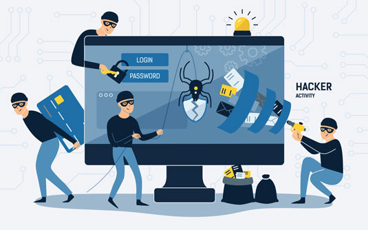

>
CYBERSECURITY THREAT

Cybersecurity threats are malicious acts committed by individuals with the intention of stealing data, causing damage to, or disrupting computing systems.
The following are the most well-known cybersecurity threats:
• MALWARE
When malware invades, you can:
-Install additional malicious software or tools.
-Get information secretly by transferring data from your hard drive. And apps (spyware, banking Trojans, backdoors, RAT).
-Move the network sideways to spread yourself and other malware. Blocks access to key components of the network.
-It corrupts certain components, corrupts files, and in some cases corrupts them. Disables the system (ransomware).
• RANSOMWARE
Ransomware gains privileged access to your computer through an initial infection vector or other malware and shuts down services and processes that perform cryptographic activities. The risk lies in the business impact or reputational loss of a sudden interruption or deletion of a service or process.
• SPYWARE
However, malicious spyware is used to profit from stolen data.
-Intrusion – via an app installer package, malicious website, or attachment.
- Monitor and collect data using keystrokes, screenshots and other tracking codes.
-Almost all information thieves send stolen data to the cyber criminals behind the attack via command and control servers. Cyber criminals use it directly or sell it to third parties.
• Adware
Adware tracks a user's browsing activity to determine behavior patterns and interests, allowing advertisers to send targeted advertising to the user. Adware is similar to spyware in that it does not require the installation of software on the user's device and is not always used for malicious purposes; however, it can be used without the user's consent and compromise their privacy.
• Phishing
Phishing happens when an attacker sends emails that appear to be from a trusted source. Phishing frequently entails sending phony emails to a large number of people, but it can also be more targeted. While "whaling" goes a step further by focusing on high-value targets such as CEOs, "spear phishing" tailors the email to a single user.